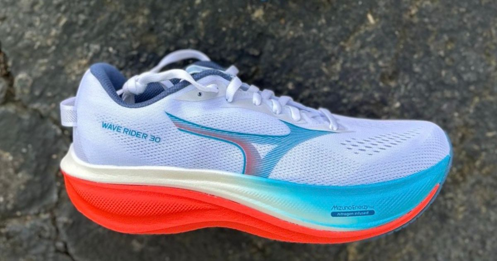
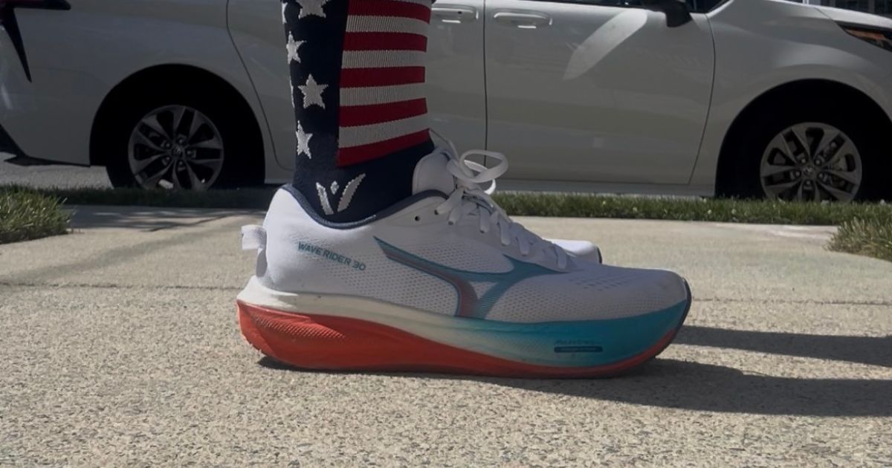

The Mizuno Wave Rider 30 is here, and let's just say—it doesn't look like the Wave Rider of old. After 30 versions, it's refreshing to see Mizuno make some meaningful updates instead of simply tweaking the formula. This feels like a modern take on one of running's longest-standing daily trainers, and after spending miles in it, we came away pleasantly surprised.

Miles Tested
The Good
Cody
One of the very first running shoes I ever bought was a Mizuno. Back then, slipping on a pair made me feel like I was officially a runner, so this brand will always be a little nostalgic for me.
Thankfully, the Wave Rider 30 isn't just relying on nostalgia—it finally makes some updates I've wanted to see.
The biggest improvement is dropping from a 10 mm heel-to-toe drop down to 8 mm. Thank goodness. That change alone makes the shoe feel much more natural underfoot, and pairing it with the updated dual-density MIZUNO ENERZY NXT midsole gives the ride a completely different personality.
The foam delivers a really enjoyable experience for daily and recovery miles. It's soft enough to be comfortable without becoming overly squishy, keeping a nice balance between cushioning and responsiveness.
The upper was another highlight. Lockdown was excellent throughout my testing, and once I laced it up, my foot stayed securely in place without any unwanted movement.
Emily
This is my first time in a Wave Rider, but from what I've heard, the 30 is a much-improved version. Mizuno has been releasing some bangers lately, so this doesn't surprise me.
Starting with the upper, it's simple yet efficient. The jacquard mesh is very comfortable, and I was able to get a good lockdown through the midfoot. It's really a no-frills type of material, but I think for a shoe like this, it works.
Moving down to the midsole, Mizuno is using a dual-density setup with Enerzy NXT directly under your foot and a firmer EVA on the bottom. I like when brands find ways to put their premium foams in their more affordable products. The Wave Rider 30 comes in at $150, which is an excellent price for a daily trainer.

The Bad
Cody
While I enjoyed the overall ride, I definitely see this as more of a daily mileage shoe than a long-run option.
Once I pushed into double-digit mileage, my legs started wanting a little more protection, and I became more aware of the Wave Plate than I was on shorter runs. It simply doesn't have the effortless cruising feel I look for in marathon training or extended long runs.
My other complaint is the upper. Even though the lockdown is excellent, it runs a bit warm. Running at the beach in the middle of summer had me questioning my footwear choice more than once. In cooler temperatures, this probably won't be much of an issue, but during hot, humid runs, it can feel a little toasty.
Emily
I just did not vibe with this shoe the way I hoped I would. I enjoy Enerzy NXT in other shoes like the Neo Vista and Neo Zen, but here in the Wave Rider, it wasn't providing me with the same bounce and softness. After 5–7 miles, the foam started to feel a bit flattened out, and there's no rocker to help make things feel any better.
I think this is likely due to the EVA layer underneath the Enerzy NXT. I also didn't really feel the wave plate in this shoe. It's not a bad ride; it's just... fine? There was nothing really pulling me back to the shoe each time I had to get my miles in.
Breathability was also lacking a bit for me, although I did test this shoe during one of the hottest weeks of the summer, so take that for what it's worth.
The Verdict
Cody
I genuinely enjoyed the Mizuno Wave Rider 30, and honestly, it wasn't what I expected—in the best possible way.
This is a solid daily trainer that's comfortable for everyday miles, recovery runs, and even works well if you're someone who mixes running with gym workouts.
My biggest hesitation is that the shoe has a ceiling. Once the mileage starts climbing, I find myself wanting more cushioning and a smoother ride. If your runs are mostly shorter daily efforts, this shoe does its job really well. If you're planning to rack up long marathon-training miles, I'd probably look elsewhere.
Emily
I seem to be one of the few people who couldn't get excited about the Wave Rider 30. Despite my experience with it, I do think this is a decent shoe that other runners could enjoy putting miles in. It's good. It'll get the job done. I think you'll get decent mileage out of it. It's just not stellar.
However, if you're a Wave Rider loyalist, it's possible you might be wowed by the changes they've made with the 30.
Worth The Price?
Cody
At $150, the Wave Rider 30 sits right where many premium daily trainers do today.
If you're looking for a more traditional-feeling daily trainer with dependable cushioning, a secure fit, and a ride that's comfortable for everyday mileage, I think the price is justified.
However, if your priority is longer runs or maximum cushioning, there are other shoes in this price range that offer a little more versatility.
Emily
$150 is a fantastic price these days. On that principle alone, I say yes. That being said, if you compare it to what else is out there at this price point (Novablast 6, EVO SL, Clifton 11, etc.), I'd rather grab one of those options.
Buy If
- You want a dependable daily trainer for easy, recovery, and everyday mileage.
- You prefer a more traditional ride with a secure upper and balanced cushioning.
- You are a longtime Wave Rider fan looking for a more modern version.
- You want a daily trainer priced at $150.
Skip If
- You want a highly bouncy or rockered daily trainer.
- You need maximum cushioning for long marathon-training runs.
- You regularly run in hot weather and prioritize a highly breathable upper.
- You prefer options like the Novablast 6, EVO SL, or Clifton 11 at this price.
Disclosure
Disclosure: This product was provided by the manufacturer for review. As always, they had no input into our testing, opinions, or final verdict.